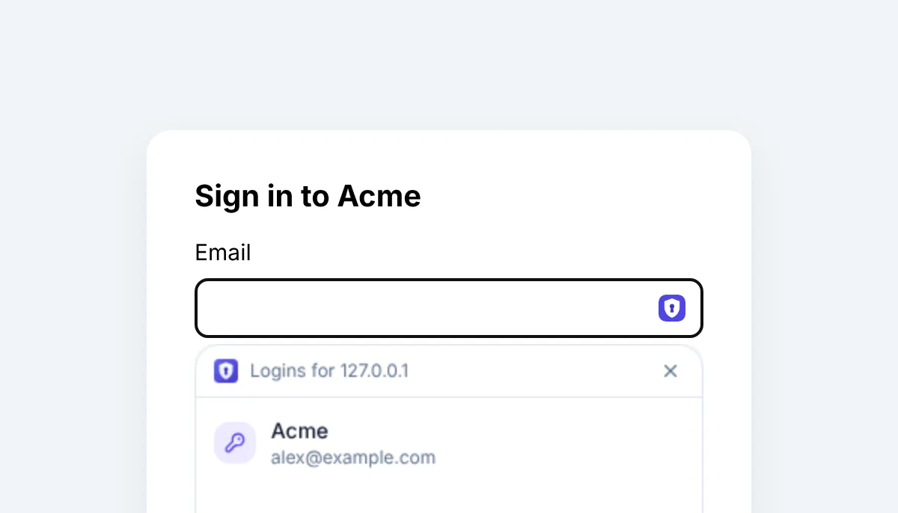

Autofill
Fast when you want it, invisible when you don't — and strict about where it fills.
- Field icon — a VaultX icon in login and sign-up fields opens a menu with your accounts or a password suggestion.
- Popup — the logins, passkeys, cards and identities for the open site; click to fill, or open the site and fill it there.
- Keyboard — Ctrl+Shift+L fills the best match; press again to cycle accounts.
- “Add to VaultX?” — saves new logins, even when the site redirects after sign-in; works inside the site's own pop-up dialogs.
- Toolbar badge — the number of saved logins for the current site.

Exact-origin matchingLogins fill only on the site they belong to; HTTPS is never downgraded.
Frame-safeOnly the top page and same-origin frames — never hidden or third-party frames.
Clickjacking defencesVaultX UI lives in closed shadow roots and only reacts to real, visible clicks.
Cards & addressesCard autofill on HTTPS only; the security code is opt-in.